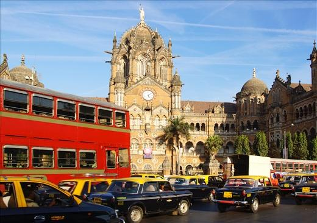
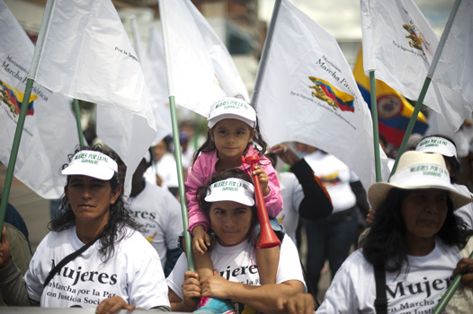

La población mundial se sitúa en torno a los 7000 millones de personas, que forman parte de una gran variedad de culturas que se reparten por todo el globo. Entender los aspectos que determinan cómo ha cambiado el mundo actual y cuáles son los principales contrastes que se dan a nivel económico, social y cultural entre personas e individuos, nos permitirá valorar el mundo que habitamos y reflexionar sobre cómo podemos mejorarlo.
-
01
El mundo multicultural
Open or CloseDada la gran variedad de pueblos, lenguas y religiones de nuestro planeta, podemos decir que existe una importante diversidad cultural. Sin embargo, también debemos tener presente que esta no solo se da a escala global, sino que también podemos observarla en nuestra propia sociedad, en la que conviven personas de distinto origen social y cultural.
Colombia es un país diverso caracterizado por el mestizaje de su población. La heterogeneidad de costumbres, acentos, gustos y formas de vida, hacen del territorio nacional un escenario de alta riqueza cultural. Un ejemplo de ello son las comunidades indígenas, que se encuentran asentadas en distintas regiones del país.
En el continente americano y en Colombia, es evidente la diversidad de orígenes de los habitantes. Nuestro país tiene principalmente tres herencias culturales y raciales: la indígena, la negra y la blanca; la interrelación entre ellas es la causa de la multiplicidad de formas de vida que vemos en el contexto cotidiano.
Según la Organización de Naciones Unidas para la Educación, la Ciencia y la Cultura (Unesco), la diversidad cultural es patrimonio común de la humanidad. En tal sentido, ser diverso es sinónimo de riqueza, en tanto comprendemos que el reconocimiento y respeto de la diferencia existente, es la base de la igualdad entre los seres humanos.
La diversidad cultural es patrimonio común de la humanidad
"La cultura adquiere formas diversas a través del tiempo y del espacio. Fuente de intercambios, de innovación y de creatividad, la diversidad cultural es tan necesaria para el género humano como la diversidad biológica para los organismos vivos. En este sentido, constituye el patrimonio común de la humanidad y debe ser reconocida y consolidada en beneficio de las generaciones presentes y futuras."
Declaración Universal sobre la Diversidad Cultural. Artículo 1.
01.1De la diversidad cultural a la interculturalidad
La sociedad contemporánea se caracteriza, entre otras cosas, por su carácter heterogéneo. Si bien puede existir una cultura dominante (la propia del lugar), podemos decir que en un mismo espacio se observa una diversidad cultural determinada por la propia evolución política, económica y social.
En un mismo país puede existir una cultura común a todo el territorio, aunque al mismo tiempo se pueden distinguir rasgos culturales propios de las diferentes regiones, definidos por factores como la propia historia, la lengua, la religión, etc.
Gran parte de las sociedades contemporáneas se definen por su diversidad cultural. En lugares como la ciudad de Nueva York, conviven cientos de nacionalidades y culturas. Un buen ejemplo de ello es el barrio de China Town, donde se concentra gran parte de la población de origen chino desde hace más de un siglo.
La interculturalidad implicaría ir un paso más allá, pues ya no solo representaría la coexistencia de distintas culturas en un mismo espacio, sino la integración de los diferentes grupos minoritarios en la cultura dominante y, por último, su fusión, lo que daría lugar a una nueva cultura.
Para que la interculturalidad sea posible, es importante que exista una condición de igualdad entre las culturas, lo que posibilita un diálogo horizontal entre ellas. La disposición para comprender las semejanzas, las diferencias, los puntos de encuentro y desencuentro, permite un trato respetuoso en el proceso de relación.
01.2Los desequilibrios entre los países desarrollados y los subdesarrollados
Las diferencias y contrastes del mundo actual se hacen evidentes si comparamos la realidad de los países desarrollados con los subdesarrollados. De este modo, mientras los países desarrollados ejercen un control de la economía mundial, los países subdesarrollados y en vías de desarrollo presentan una dependencia económica respecto a los primeros.
La dependencia económica implica estar subordinado frente a alguien o algo, específicamente en términos económicos. Esta relación se puede presentar en las relaciones personales y entre sociedades. En la actualidad existen países que establecen las condiciones sobre las cuales debe funcionar la economía y, en consecuencia, otros no cuentan con independencia y autonomía para la toma de decisiones en este ámbito.
La dependencia económica tiene como causas centrales:
LOS PAÍSES DESARROLLADOS LOS PAÍSES SUBDESARROLLADOS Y EN VÍAS DE DESARROLLO - El crecimiento demográfico bajo.
- La población envejecida.
- La recepción de inmigración.
- El Estado de bienestar consolidado.
- La elevada renta per cápita.
- Comercio exterior favorable.
- Economías dominantes, centradas en los sectores secundario y terciario.- El alto crecimiento demográfico.
- La población joven.
- Situaciones de desplazamiento interno.
- Altos índices de pobreza, desempleo y precariedad de condiciones de vida.
- La baja renta per cápita.
- Comercio exterior desfavorable.
- Economías dependientes, centradas en el sector primario.Los países dependientes económicamente no han logrado un desarrollo que les permita mejorar las condiciones de vida de la población. Por tal razón se les denomina subdesarrollados o en vías de desarrollo, pues en relación con los países desarrollados, no cuentan con servicios básicos para las mayorías.
Colombia, considerado como un país en desarrollo, afronta grandes retos para procurar el bienestar social a partir de planes de gobierno orientados a disminuir el desempleo, la pobreza, fortalecer la salubridad, la educación y dar soluciones efectivas a los problemas sociales ocasionados por el conflicto armado y la violencia.
Los países subdesarrollados se ubican principalmente en América Latina, África y Asia, regiones donde el nivel de vida de la población es bajo. Colombia forma parte de ellos, pues no existe una plena satisfacción de las necesidades de los habitantes en cuanto a educación, alimentación, vivienda, trabajo, salud, empleo, entre otros.
En una situación intermedia entre los países desarrollados y los subdesarrollados, se encuentran las llamadas potencias emergentes. Las más importantes, conocidas como BRIC, son Brasil, Rusia, India y China.
La India es una de las llamadas potencias emergentes. En las calles de sus principales ciudades se mezclan gentes de distinta clase social, religión y cultura. Además, la presencia británica en el país aún se siente y se alzan monumentos como la estación Victoria Terminus, en Mumbai.
Profundiza
01.3Los indicadores de desarrollo
El nivel de desarrollo de las distintas regiones del mundo se puede cuantificar mediante algunos indicadores estadísticos. El instrumento para medir el grado de desarrollo de un país es el Índice de Desarrollo Humano (IDH), que engloba diferentes parámetros sobre la población:
- El índice de esperanza de vida.
- Los niveles de acceso a la educación.
- Los niveles de alimentación.
- El acceso a recursos y servicios sociales.
- El Producto Interno Bruto (PIB).
La renta per cápita y el PIB
El Producto Interno Bruto (PIB) es el valor monetario que se le da a los bienes y servicios que produce un país durante un periodo determinado de tiempo (normalmente, un año). La renta per cápita, por otra parte, es el resultado de dividir el PIB de un país entre el número total de sus habitantes.
Brasil es uno de los países en vías de desarrollo, aunque aún existen profundas diferencias de riqueza entre sus ciudadanos. En ciudades como São Paulo, las grandes desigualdades se hacen evidentes en su propio urbanismo. Las favelas son barrios marginales que se reconocen por sus viviendas precarias y la falta de acceso a servicios básicos de sus pobladores.
El índice de esperanza de vida indica el promedio de edad que vive la población de un país en un periodo determinado. Este índice depende del grado de violencia social, el desarrollo de la medicina, el acceso a salud y las condiciones de pobreza; por ejemplo, para el año 2013 en Guatemala fue de 72 años, mientras que en Noruega fue de 82.
El nivel de alimentación implica no solo el acceso a alimentos, sino a alimentos de calidad que permitan una buena nutrición de la población. Así, los habitantes de países en los que existen límites de acceso a alimentos, comúnmente sufren de desnutrición, mientras que los que cuentan con alimentos pero no necesariamente saludables, pueden sufrir de malnutrición.
Dado que los problemas de alimentación se mantienen por generaciones, la Organización Mundial de la Salud (OMS) tiene como meta reducir el retraso de crecimiento de niños menores de cinco años, la anemia de mujeres en edad reproductiva, el bajo peso al nacer, el sobrepeso en niños y aumentar la lactancia materna en un 50 % de la actual.
De otro lado, el acceso a educación, recursos y servicios sociales, marca notablemente la calidad de vida y hacen posible disminuir la pobreza. Por tal razón, en el año 2000 las Naciones Unidas definieron ocho objetivos de desarrollo humano, que buscan solucionar los problemas de la vida cotidiana de millones de personas. Este organismo propuso a los países lograr para 2015 estos propósitos conocidos como los Objetivos de Desarrollo del Milenio:
- Objetivo 1: Erradicar la pobreza extrema y el hambre.
- Objetivo 2: Lograr la enseñanza primaria universal.
- Objetivo 3: Promover la igualdad entre los géneros y la autonomía de la mujer.
- Objetivo 4: Reducir la mortalidad infantil.
- Objetivo 5: Mejorar la salud materna.
- Objetivo 6: Combatir el VIH/SIDA, el paludismo y otras enfermedades.
- Objetivo 7: Garantizar la sostenibilidad del medio ambiente.
- Objetivo 8: Fomentar una asociación mundial para el desarrollo.
Profundiza
Estos indicadores permiten reflejar la situación de un país y establecer, al mismo tiempo, contrastes entre países. Gracias a ello, se evidencian las desigualdades Norte-Sur, que se ven agravadas por:
- Los efectos de la descolonización, puesto que todavía existe dependencia de los países desarrollados.
- Los desequilibrios demográficos, es decir, las diferencias en el número de habitantes y de rentas per cápita entre territorios.
- Los efectos de la globalización y el diferente acceso a la información y a las nuevas tecnologías.
01.4Consolidación
Actividades para consolidar lo que has aprendido en esta sección.
-
02
Las migraciones del siglo XXI
Open or CloseEl mundo actual se caracteriza por movimientos migratorios importantes, personas que dejan su lugar de residencia para emprender una nueva vida.
Aunque las migraciones han sido un elemento central dentro del desarrollo de la historia de la humanidad, hoy día se realizan por quienes buscan mejores condiciones de vida, debido a las desigualdades y desequilibrios presentes entre grupos sociales y países.
En la actualidad, miles de personas en el mundo se trasladan a otras ciudades o incluso a otros países. La población inmigrante en el mundo se estima aproximadamente en 232 000 000 personas, que, por diversas causas, han dejado sus lugares de origen y se han establecido temporal o permanentemente en otro territorio.
Profundiza
02.1Causas de las migraciones y los flujos migratorios
Existen distintos motivos que pueden llevar a las migraciones. La búsqueda de un nuevo trabajo y de una estabilidad económica, así como la huida de situaciones políticas o sociales complicadas, son algunos de los elementos que llevan a las personas a marcharse de su país.
Los procesos migratorios no solo se dan entre países, también se generan en su interior. Colombia es un ejemplo de ello; el proceso de desplazamiento forzado que han vivido millones de pobladores por causa del conflicto armado, muestra un proceso de migración fundamentalmente de campesinos hacia las ciudades.
El largo muro de acero que divide la frontera entre México y Estados Unidos es una de las estrategias que ha creado el gobierno norteamericano para limitar la entrada de inmigrantes a este país. La mayoría de los ingresos de quienes buscan mejores condiciones de vida, se realiza de forma ilegal por fronteras como sierra de Tinajas Altas en Arizona.
Colombia es el segundo país con más desplazados internos en el mundo. En este proceso de migración interna, aproximadamente 5 700 000 colombianos han sido obligados a abandonar sus tierras por causa del conflicto armado que vive el país hace más de 50 años. De igual forma existen más de 400 000 colombianos refugiados en el exterior.
Los movimientos migratorios se han producido con una mayor rapidez en las últimas décadas a causa del desarrollo de los medios de transporte, los cuales han contribuido a definir de forma clara distintas rutas migratorias en tres sentidos distintos: Sur-Norte, Este-Oeste y Norte-Norte.
Las razones para las migraciones se basan sobre todo en encontrar mejores condiciones de vida, aunque el motivo puede ser causado por distintos factores: conflictos bélicos, catástrofes naturales, persecuciones políticas, crisis humanitarias, razones socioculturales, etc.
Los territorios con más receptores de inmigración son Estados Unidos y Europa Occidental, y las zonas con más emigrantes son África, Asia, América Latina y Europa del Este.
Recuerda
Las principales causas de las migraciones en el mundo contemporáneo se deben a razones económicas, políticas, humanitarias y socioculturales.
Las causas económicas tienen su origen en la desigualdad de ingreso y distribución de la riqueza. Comúnmente los pobladores de zonas más empobrecidas buscan emigrar hacia territorios con mejores salarios y mayor acceso a servicios; este es el caso de los inmigrantes latinos que se trasladan a países como Estados Unidos.
Cuando existen conflictos bélicos, se genera desplazamiento forzado y persecución política de población. Esto ocurre debido a disputas por el poder entre grupos sociales y países.
Las catástrofes naturales provocan crisis humanitarias a mediano y largo plazo. Los sobrevivientes de terremotos, tsunamis y avalanchas, entre otros, migran buscando refugio en lugares más seguros, lejos de los sitios de desastre.
Un ejemplo de una causa sociocultural para migrar es cuando un joven busca seguir sus estudios en otro país debido a mejores oportunidades académicas; otra es cuando una persona se traslada a otra región para conocer una nueva cultura, sus costumbres, lengua y formas de comprensión del mundo.
02.2Consolidación
Actividades para consolidar lo que has aprendido en esta sección.
-
03
La revolución tecnológica
Open or CloseLa revolución de las tecnologías de la información y la comunicación, conocidas con la sigla TIC, ha sido uno de los elementos definitorios del cambio de milenio, cuyo mayor exponente ha sido internet. Junto con la revolución en los transportes y las comunicaciones, la red ha favorecido:
- La globalización de la economía.
- La mundialización de las relaciones sociales.
03.1La industria
La revolución tecnológica también ha hecho posible comprender mejor el mundo que nos rodea y desarrollar técnicas especializadas para distintas ramas del conocimiento. Por ejemplo, en la medicina el avance en vacunas, medicamentos y medicina preventiva es significativo, así mismo, hay procesos de industrialización que han disminuido el esfuerzo necesitado para producir mercancías de consumo básico.
Los alimentos, fundamentales para la sobrevivencia humana, han sufrido un proceso de transformación importante. Tanto el cultivo como la forma de procesamiento y comercialización, han variado desde la Revolución Industrial, logrando una producción masiva y diversificada.
Cada vez más se habla de cultivos eficientes y tecnologías que se aplican a cultivos y semillas. En un cultivo eficiente se aprovecha la tecnología para que dé su mejor fruto.
Las expediciones realizadas a otros lugares del universo, principalmente a Marte y a la Luna, permiten saber si es posible o no el desarrollo de la vida humana en zonas distintas al planeta Tierra. Estos hallazgos no hubiesen sido posibles sin el desarrollo tecnológico que ha alcanzado hoy la humanidad.
Sin embargo, así como existen avances gracias a la revolución de la técnica y la tecnología, también hay consecuencias que preocupan. Parte de la técnica de la física, la electrónica y la química, se ha utilizado para sofisticar armas letales empleadas en conflictos bélicos; de igual modo, la producción en masa alcanzada gracias al avance de la industria, ha traído secuelas ambientales difíciles de solucionar a corto plazo.
03.2Las comunicaciones
Las nuevas tecnologías han supuesto un cambio de paradigma en el acceso a la información y ahora es posible estar informados en todo momento de lo que pasa en el mundo por múltiples canales; por ejemplo, llamar desde un teléfono móvil a cualquier hora y en cualquier lugar en que nos encontremos.
También ha habido un gran cambio en las relaciones sociales. Las redes sociales nos permiten contactar, por motivos profesionales o personales, con gente de todos los continentes al instante.
Mark Zuckerberg es el creador de la red social Facebook. En 2014 Facebook contaba con más de 1350 millones de usuarios y dada su expansión entre 2007 y 2008 fue traducida a 70 idiomas; hoy es la red social gratuita más consultada del planeta.
Es indiscutible el avance que implica el desarrollo de las tecnologías de la información y la comunicación (TIC). En el mundo actual buena parte de las relaciones sociales se han modificado debido, en parte, a la disminución del tiempo para contactarnos y compartir información.
03.3La vida cotidiana
La dinámica propia de la historia no se percibe solo en grandes cambios políticos y económicos; también se refleja en nuestro diario vivir. Seguramente la cotidianidad de una persona hace treinta años era muy distinta a la de hoy: los gustos, la forma de vestir, la manera de cocinar los alimentos, el tiempo destinado para trasladarse de un lugar a otro, etc.
Piensa solamente en la cantidad de electrodomésticos que diariamente utilizamos para disminuir el tiempo en las labores del hogar. Sería impensable tener la vida que tenemos y contar con tiempo libre si tuviésemos que gastar buena parte de nuestro día cocinando, consiguiendo agua potable, aseándonos y organizando nuestra vivienda.
Los servicios públicos básicos, como luz, agua, alcantarillado, gas e internet, han hecho un gran cambio en la vida cotidiana de algunas décadas atrás. El desarrollo de la ingeniería, la física, la química y la arquitectura han permitido avances que marcan el mundo de hoy desde que despertamos hasta que anochece.
No obstante, es importante pensar en las consecuencias negativas propias del afán que caracteriza nuestro tiempo: enfermedades relacionadas con la malnutrición o el estrés, los efectos medioambientales del uso irracional de los recursos naturales y la falta de contacto con el mundo real e inmediato que nos rodea, también caracterizan el mundo actual.
El acceso a la tecnología
Es importante tener presente que debido a los desequilibrios y desigualdades del mundo actual, no todas las personas tenemos el mismo acceso a la tecnología. Si se lograra ampliar su acceso, posiblemente bajarían las altas tasas de mortandad infantil en África a causa de enfermedades de fácil cura, o buena parte de los habitantes de países subdesarrollados, principalmente ubicados en áreas rurales, podrían contar con agua potable.
03.4Consolidación
Actividades para consolidar lo que has aprendido en esta sección.
-
04
Nuevas ciudadanías
Open or CloseHoy surgen nuevas formas de expresión de quienes buscan cambios sociales en el mundo contemporáneo. Retos generados a causa de situaciones de exclusión, y acciones ligadas al reconocimiento de la igualdad entre los seres humanos, se convierten en elementos centrales para comprender la sociedad actual.
04.1Los retos del mundo actual
El mundo de la segunda década del siglo XXI tendrá que afrontar distintos retos. Entre ellos sobresalen los siguientes:
- Las desigualdades sociales y económicas, que implican el acceso dispar a servicios fundamentales, como alimentación sana, vivienda, educación y salud. Este tipo de diferencias son evidentes en las clases sociales y los estratos, ya sea entre diferentes países o dentro de un mismo país.
- La crisis financiera global a la que han llegado los países desarrollados después del estallido de la burbuja inmobiliaria. Debido al papel de control que sobre la economía mundial ejercen los países desarrollados, un país en vías de desarrollo como Colombia, sufre la crisis como una economía dependiente. Las consecuencias directas son falta de empleo y desmejora de las condiciones de vida de los pobladores.
- Los problemas humanitarios, como el hambre y la pobreza. Especialmente en nuestro caso, este reto está marcado por el mantenimiento del conflicto social y armado de los últimos cincuenta años, y sus consecuencias directas como el desplazamiento forzado y la violencia social.
- Los problemas ambientales, como los derivados de la sobreexplotación de los recursos naturales y la contaminación del medio ambiente. Tales dificultades afectan a la población mundial, en tanto que el equilibrio de los ecosistemas es el que posibilita el mantenimiento de la vida humana.
- El triunfo de revoluciones democráticas, como el caso de la Primavera Árabe y algunos países latinoamericanos. Estas formas de movilización buscan cambios del mundo actual debido a las diversas problemáticas ya abordadas.
En el mundo existen organizaciones sin ánimo de lucro como las organizaciones no gubernamentales (ONG), que luchan, entre otras causas solidarias, contra las desigualdades entre los diferentes países del mundo o por la defensa del medio ambiente, como lo hace Greenpeace.
Para dar solución a todos estos problemas, se tendrán que desarrollar políticas globales que precisarán del consenso internacional. Por tal razón, tanto ONG como organizaciones de la sociedad civil, buscan crear escenarios mundiales en donde los gobernantes de los diferentes países planteen políticas concretas que mitiguen las desigualdades existentes.
04.2Trasformaciones generadas por diversos grupos sociales
Dado el complejo panorama actual, grupos sociales inconformes con sus condiciones de vida, han venido visibilizando sus necesidades más sentidas. Las transformaciones que buscan, plantean cambios sociales que modifiquen la situación de desigualdad que aún existe a nivel local, nacional y mundial.
Falta pie de foto
A lo largo del siglo XX, trabajadores, campesinos, indígenas y afrodescendientes han sido protagonistas de luchas sociales de gran importancia. En las últimas dos décadas, nuevos sujetos sociales han aparecido pidiendo reconocimiento e igualdad. Tal es el caso de las mujeres, quienes han colocado sobre la agenda pública la equidad de género, diversos grupos ambientalistas, que han presionado a los gobiernos para establecer políticas que mitiguen los impactos ambientales de los procesos productivos, y organizaciones LGBTI, que reivindican la diversidad sexual y la igualdad de derechos.
Uno de los símbolos centrales de la diversidad sexual es la bandera multicolor. Esta es utilizada en las distintas manifestaciones que propenden por el reconocimiento de la igualdad de derechos de la población LGBTI (lesbianas, gays, bisexuales, transexuales e intersexuales).
04.2.1En el ámbito del trabajo
La crisis económica actual es la más grave después de la desencadenada en el año de 1929. Las causas deben buscarse en situaciones como las fluctuaciones del precio del petróleo, las políticas neoliberales en el Tercer mundo, o en el hundimiento de las entidades financieras, que concedieron hipotecas de alto riesgo o subprime a gente de un poder adquisitivo muy bajo. Estas situaciones desencadenaron:
- La recesión de las economías.
- La restricción del crédito.
- El aumento del desempleo.
Dado que una de las consecuencias más importantes fue el desempleo generalizado, el mundo del trabajo se ha visto transformado sustancialmente. Uno de los grandes retos de los trabajadores del siglo XXI es enfrentarse a la explotación laboral, sobre todo en los países subdesarrollados y en vías de desarrollo, donde se vulneran muchos de los derechos fundamentales.
Potosí (Bolivia) es una de las ciudades ubicadas a mayor altura sobre el nivel del mar en el mundo. En ella, miles de trabajadores de las minas extraen diariamente plata y estaño de forma artesanal. Sus condiciones laborales son precarias debido a la explotación laboral de antaño.
La Organización Internacional del Trabajo (OIT) calcula que:
- Casi 21 millones de personas son víctimas del trabajo forzoso: 11,4 millones de mujeres y niñas, y 9,5 millones de hombres y niños.
- Alrededor de 19 millones de víctimas son explotadas por individuos o empresas privadas y más de 2 millones por el Estado o grupos rebeldes.
- De aquellos que son explotados por individuos o empresas, 4,5 millones son víctimas de explotación sexual forzosa.
- El trabajo forzoso en la economía privada genera ganancias anuales ilegales de 150 000 millones de dólares por año.
- El trabajo doméstico, la agricultura, la construcción, la manufactura y el entretenimiento se encuentran entre los sectores más afectados.
- Los trabajadores migrantes y los pueblos indígenas son especialmente vulnerables al trabajo forzoso.
Tal situación muestra la necesidad de transformaciones urgentes en el mundo del trabajo. Algunos Estados y trabajadores se organizan buscando mejores condiciones de vida, la eliminación del trabajo forzoso y mayores garantías laborales. De igual forma, los desempleados se manifiestan a favor de políticas económicas que suplan la mano de obra libre y posibiliten el desarrollo productivo de los países. De no ser así, la situación de los trabajadores y sus familias tendería a la pobreza.
Profundiza
04.2.2Manifestaciones a favor de la igualdad
Ante las desigualdades sociales y económicas, diversos grupos sociales han propuesto cambios sobre las normas que rigen la vida social. A tales grupos se les ha denominado nuevos movimientos sociales, en tanto propenden por el reconocimiento de sus derechos desde las particularidades específicas de su situación.
La Plaza Tahrir de El Cairo (Egipto) se convirtió en el centro de las protestas contra Hosni Mubarak en enero de 2011. Un año después, los egipcios se volvieron a reunir en el mismo punto para exigir la democratización del país y la mejora de las condiciones de vida de sus ciudadanos. Entre mayo y junio de 2012, se celebraron elecciones presidenciales que dieron la victoria al islamista Mohamed Morsi. En julio de 2013, tras unos días de masivas manifestaciones exigiendo su dimisión, el Ejército depuso a Morsi y suspendió la Constitución.
Grupos de mujeres, LGBTI, ambientalistas, jóvenes e inmigrantes como parte de la sociedad civil, buscan ampliar la ciudadanía y participar activamente en las decisiones centrales de la vida pública y privada. Esta situación pretende generar cambios en los gobiernos de algunos países y en la normatividad que regula la vida en sociedad, para frenar las expresiones racistas y discriminatorias que se mantienen.
En el caso de los movimientos de mujeres, es clara la demanda por la igualdad de género. Esta igualdad pasa por el reconocimiento de las mujeres como sujetos de derechos, en donde ellas tengan control sobre su sexualidad y su cuerpo, puedan discutir la disparidad de funciones en el ámbito privado y público, y puedan generar acciones en contra de la violencia.
El género femenino ha sido marginado en cuestión de derechos. Tanto en Colombia como en todo el mundo, las mujeres se manifiestan de distintas maneras buscando incansablemente presionar el cambio hacia un entorno más favorable.
Por su parte, los movimientos ambientalistas y animalistas pretenden generar conciencia frente al equilibrio entre el ser humano y los otros seres vivos. Al fomentar la protección al medio ambiente, realizan una fuerte crítica social al mundo actual, principalmente por la degradación de la flora y fauna, y por la forma como se afectan los niveles de calidad de vida.
Reducir la "huella ecológica" implica examinar el modo de vida actual y la biocapacidad del planeta, buscando establecer el impacto ambiental existente y las posibles acciones que permitan un mundo sostenible. En este sentido, los ambientalistas y animalistas rescatan el respeto por el medio que nos rodea.
El animalismo se ha manifestado en contra de las corridas de toros, las cabalgatas, las peleas de gallos, los circos, etc. En Colombia ya se ha ganado mucho terreno en la lucha contra el maltrato animal con leyes que defienden los derechos de los animales, como la Ley 1774 de 2016.
Por otra parte, el fenómeno de la migración forzada marca la vida de millones de personas. Los inmigrantes buscan condiciones de legalidad para trabajar en igualdad de derechos como ciudadanos, lo cual pasa por el cambio en la legislación de los países receptores. En la actualidad, los movimientos de inmigrantes se manifiestan en contra de la discriminación racial y las deportaciones forzosas.
Según las Naciones Unidas, la mayoría de los migrantes internacionales esta? en edad laboral (74 % del total), es decir que se encuentran entre los 20 y 64 años, por tal razón es central la demanda de trabajo en condiciones dignas e igualitarias en relación con los pobladores nativos.

Marchas como esta en Washington (Estados Unidos) muestran cómo los trabajadores inmigrantes reclaman el derecho a no ser discriminados por su origen y claman por la "legalización" y equidad de las condiciones de trabajo y la justicia económica.
04.3Consolidación
Actividades para consolidar lo que has aprendido en esta sección.
-
05
Competencias
Open or ClosePon a prueba tus capacidades y aplica lo aprendido con estos recursos.
-
Fin de unidad:
Open or Close
repasoWebs de referencia
- Página de la Unicef en la que se pueden encontrar datos sobre los derechos humanos, especialmente de niños y niñas.
- Página de la Consultoría para los Derechos Humanos y el Desplazamiento, en la que se encuentran datos históricos sobre el fenómeno del desplazamiento forzado en Colombia.
- Página de la Comisión Económica Para América Latina y el Caribe, con datos actuales sobre los retos de la región.